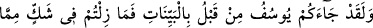
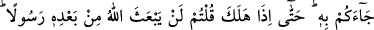
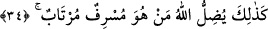

Örümcekte Anka tabiatı olsaydı
Hiç tükürüğüyle çadır kurar mıydı?
Firavun âilesinin mümin ferdi daha sonra kınama yollu şöyle diyor:
34. Andolsun ki, (Mûsâ’dan) önce Yûsuf da size açık deliller getirmişti ve onun
size getirdiği şeyler hakkında şüphe edip durmuştunuz. Nihayet o vefat edince
«Allah ondan sonra peygamber göndermez» dediniz. İşte Allah o aşırı giden
şüphecileri böyle saptırır.
Ey Mısırlılar! “Andolsun ki,” Halil İbrahim (a.s)’ın oğlu İshâk (a.s)’ın oğlu Yakub
(a.s)’ın oğlu olan “Yûsuf da daha önce,” yâni Mûsâ’dan önce “size açık deliller:” rüya
tabiri ve suçsuzluğuna bir bebeğin tanıklık etmesi gibi hususların da aralarında
bulunduğu âşikâr mûcizeler “getirmişti.”
Yûsuf (a.s.) Hz. Mûsâ’dan önce, hükümdarlarının ölümünden sonra Kıbtîlere
gönderilmişti. Yûsuf’un zamanındaki Firavun, Hz. Mûsâ’nın Firavun’u idi ve onun
zamanına kadar yaşamıştı. Zira Mûsâ’nın Firavun’u dört yüz sene yaşamıştır. İbn
Kuteybe’nin, Kitâbü’l-ma’ârif ’inde naklettiğine göre de İbrâhim (a.s.)’la Hz. Mûsâ
arasında dokuz yüz sene var olduğuna göre, Mûsâ ile Yûsuf arasında da takriben
Firavun’un ömrü kadarlık bir süre vardı demektir. Böylece bizzat Firavun’a hitâb
edilmiş olmaktadır. Ancak “size geldi” ifadesinde muhatap çoğuldur. Çünkü ona gelmiş
olması, kavmine de gelmiş olması anlamına gelir. Yoksa Hz. Mûsâ devrinin insanları
Yakub oğlu Hz. Yûsuf’u görmüş değillerdir. Daha güçlü olan görüş, ataların
yaptıklarının çocuklarına isnâd edilerek Mûsâ’nın çağdaşlarının öncekiler yüzünden
kınanmakta olmasıdır. Yani: “Ey Kıptiler! Yusuf sizin önceki atalarınıza da gelmişti.”
Bu tıpkı Hz. Peygamber (s.a.) devrindeki yahudileri muhatap alan şu âyet-i kerîmeye
benzer: “Öyle ise Allah’ın peygamberlerini neden öldürüyordunuz!?” (el-Bakara
2/91) Burada kasdedilenler, Peygamberimiz dönemindeki yahudiler değil, onların
atalarıdır. Çünkü peygamberleri öldürenler onlardı. Ayrıca, bu îzâhımızdan, bazılarının
dediği gibi Mûsâ’nın Firavun’unun Yûsuf’un Firavun’unun neslinden olması da
gerekmez. Bu Yûsuf’un, Mısır’da yirmi sene peygamber olarak kalan, Hz. Yûsuf-i
Sıddîk’ın oğlu Efrâyîm’in oğlu olan Yûsuf olduğu da söylenmektedir.
Fakat sizler “onun size getirdiği şeyler,” hak din “hakkında şüphe edip
durmuştunuz.”